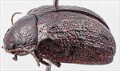
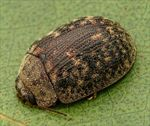
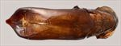
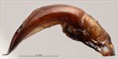
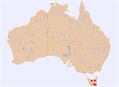

Click on images to enlarge


Male, Hobart, Tasmania


Female, Mole Creek, Tasmania


Aedeagus, dorsal view (Hobart, Tasmania)


Aedeagus, lateral view (Hobart, Tasmania)


Distribution
Name
Trachymela serpiginosa (Erichson)
Reference specimen
1997-504, Hobart, Tasmania.
Adult Description
Length: ♂ 8.2–8.6 mm (n=3), ♀ 7.7–8.9 mm (n=4).
Colouration:
- Head: Frons dark brown, clypeus and area around antennal insertions black, rear of head (behind level of eyes) black, visible only if head slightly extended; labrum black; mandibles dark brown, usually with black tips, or completely black; antennomeres 1–2 light brown, 3–5 grading towards black, 6–11 very dark brown or black.
- Pronotum: Brown, concolorous with head, 2 round or oval black maculae on disc, one on each side of centre, a small round black macula in foveal area, directly behind middle of eyes, anterior and lateral margins black.
- Scutellum: Black.
- Elytra: Brown, concolorous with pronotum, with black wart-like elevations and longitudinally extended ridges arranged over much of inner half of discal surface in several more or less interrupted rows, these black elevations particularly thick just posterior to antero-median suture, elytral suture sometimes narrowly black, punctures concolorous with or fractionally darker than interstices, humeral callus black.
- Venter & Legs: Black, including legs, inside surface of elytral epipleura brown, inner edge of epipleura lacking setae.
- Cuticular Wax: Light brown, distributed quite evenly and moderately densely over pronotum, scattered unevenly between verrucae on elytra.
Morphology:
- Head: Punctures moderately sized to quite large (pd ≈ 1.5–3× ef), evenly and densely distributed. Antennae moderately long (AL/BL: ♂ 41–44%, ♀ 34–38%), filiform.
- Pronotum: Almost evenly curved transversely over discal region, foveal depression very shallow with a pronounced, round, often smooth foveal verruca in its centre, marginal area noticeably explanate, discal area slightly uneven to a little rough-textured, but never obliterating punctures, punctures on disc deeply impressed, similar in size to largest on head and quite evenly and relatively densely distributed, punctures on marginal area become noticeably coarser; thick front margins join thinner lateral margins in a tight rounded right-angle, with lateral margins initially almost straight for about half their length before curving smoothly and gradually towards thicker rear margin.
- Scutellum: Smooth and unpunctured.
- Elytra: Profile evenly and lightly curved from scutellum for a little more than half distance to apex where curvature increases considerably, suture almost perpendicular to ventral surface just before apex, greatest height viewed laterally in front of middle of elytral margin (H/BL = 0.39–0.43). Surface evenly curved transversely, antero-median depression relatively well-defined, punctures large and distinct and relatively evenly distributed between rows of verrucae, punctures in marginal area similar in size to those on disc, very fine punctures scattered sparsely over interstices; VS1–3 form long ridges over part of their length, thickened in places into large, prominent verrucae, VS5 includes a large verruca anterior to depression and another just behind, verrucae in other series less prominent, large verrucae just behind antero-median depression as well as a large elevated area along discal margin form a broad transverse but interrupted ridge, many elevated interstices connect adjacent verrucal series forming a dense network of ridges over much of disc; elytral suture carinate in posterior 25%, surface discontinuous under humeral callus. Vertical extension of epipleura moderate (HCE/PW = 0.30–0.35), elytral margin straight or almost imperceptibly sinuous, with anterior section oblique.
- Venter: Prosternal process almost parallel-sided, closed anteriorly, short setae sparsely distributed over prosternal process and mesoventrite, a single seta on anterior and median trochanter; front edge of metaventrite beveled, truncate; inner edge of posterior of epipleura lacking setae.
Male Genitalia (Aedeagus):
- Dimensions: Moderately long (LPE = 33–34% BL).
- Dorsal view: Shaft almost parallel-sided from basal sulcus to about middle before widening slightly to about middle of ostial opening before sides converge towards apex in a smooth and gradual arc, dorsal surface lightly sclerotized, dorso-median channel posterior to ostium very faint or absent, ostium very large, oval-shaped, its posterior extent merging smoothly with adjacent dorsal surface and broad dorsal ostial processes projecting anteriorly close to spatula, spatula large, tip protruding and very slightly truncate.
- Lateral view: Shaft almost evenly and rather strongly curved throughout, thinning towards apex over 15% of length, tip strongly deflexed; flagellum almost invariably broken off.
Immature Stages
- Eggs: Described by de Little (1979).
- Larvae: Described by de Little (1979).
Similar species
- Ta77: Another Tasmanian species that is much paler in colour overall and its verrucal series are more clearly defined over the whole of the disc. Ventrally, Ta77 is black but has pale brown legs in contrast to the black legs of Ta102. The aedeagi of these species are very different.
- Ta22: This mainland species is clearly very closely related to Ta102 and may in fact be conspecific with it. The pronotal puncturation in Ta22 is fine compared with the quite robust puncturation of Ta102. The sculpture of the elytra clearly differs between these species, with the verrucae of Ta102 being more longitudinally extended than those of Ta22. The aedeagus of the two species is almost identical, though that of Ta102 seems more strongly curved, but this is not evident in the measurements, and its spatula is slightly larger.
Notes
- Taxonomy: The identification of Ta102 as Trachymela serpiginosa (Erichson) is by comparison with photos of the holotype. This is Ta2 in de Little’s (1979) PhD thesis, although the aedeagus illustrated is clearly not correct.
- Host Associations: Recorded from Eucalyptus viminalis (9 records) and E. gunnii (2 records) by de Little (1979). Both of these species are in the subgenus Symphyomyrtus, section Maidenaria of Eucalyptus.
Copyright © 2026. All rights reserved.